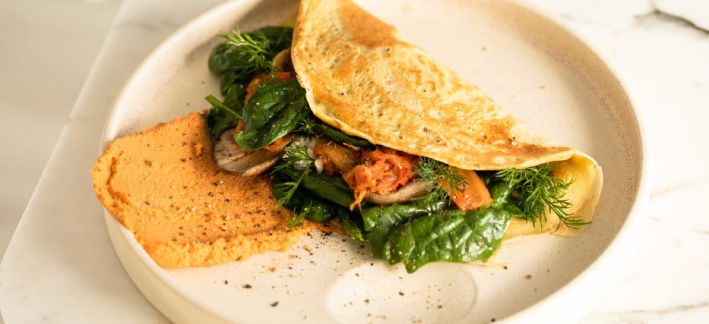

An easy and quick dish, perfect for any meal. This classic omelette combines beaten eggs cooked to perfection, optionally filled with your choice of cheese, vegetables, or meats.
Total: Approximately 10 minutes
Preparation: 5 minutes
Cooking: 5 minutes
2-3 large eggs
Salt, to taste
Pepper, to taste
1 tablespoon of butter or oil
Optional fillings: cheese, diced vegetables, cooked meats, herbs
Beat the eggs: In a bowl, beat the eggs with a pinch of salt and pepper until they are well mixed. You can add a tablespoon of water or milk for a fluffier texture.
Heat the pan: Place a non-stick frying pan over medium heat and add butter or oil.
Cook the omelette: Once the butter is melted and bubbling, pour in the eggs. Tilt the pan to ensure the eggs evenly coat the surface.
Add fillings (optional): When the eggs begin to set at the edges but are still slightly runny in the middle, sprinkle your chosen fillings over one half of the omelette.
Fold and serve: As the omelette continues to cook, carefully lift one edge and fold it over the fillings. Let it cook for another minute, then slide it onto a plate.
Enjoy: Serve hot, with additional salt and pepper if needed.
The table below shows nutritional values per serving without the additional fillings.
| Calories | 277kcal |
| Carbs | 0g |
| Protein | 20g |
| Fat | 22g |